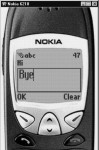
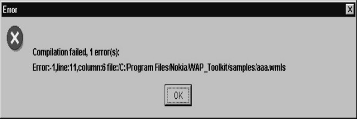

2
Conditions and Loops
In this chapter, we shall
discover the conditional statements and the loops that are provided for, in
WMLScript. These are the very basic components of every programming language.
· Conditions enable a
programmer to conditionally execute or prevent execution of certain parts of
the code.
· Loops provide a mechanism
whereby, a specific piece of code is executed repeatedly, either for a
specified number of iterations or until some condition is satisfied.
These two mechanisms render
the software program with the requisite intelligence. So far, we have only
shown you code that is static in behaviour and does not fall in the realm of
things dynamic. This is because, every statement in the code is executed
sequentially and executed only once. We intend to rectify this situation using
conditions and loops.
The WML file looks as
follows :
a11.wml
<?xml version="1.0"?>
<!DOCTYPE wml PUBLIC "-//WAPFORUM//DTD WML 1.1//EN" "http://www.wapforum.org/DTD/wml_1.1.xml">
<wml>
<card newcontext="true">
<do type="xx" >
<go href="aaa.wmls#abc()">
</go>
</do>
<p>
Hello $aa
</p>
</card>
</wml>
|
Screen 2. 1 |
aaa.wmls
extern function abc()
{
var yy;
yy = 10;
if ( true)
yy = 20;
WMLBrowser.setVar("aa",yy);
WMLBrowser.refresh();
}
In this example, we have a
variable called yy and we are assigning it a value of 10. The next statement is
if(true). The if statement is passed either a true or a false value. True means
YES, while false means NO. Since we have used if(true), the next line gets
executed. Therefore, the value of yy becomes 20 and hence, aa gets displayed as
20.
You are bound to wonder as
to what is so original about this program. The if statement could simply be
removed and everything else would work as normal. So, to demonstrate the
usefulness of the if conditional statement, we change the true to false. When
we do so, the next line gets ignored. Thus, yy = 20 doesn't get displayed at
all.
|
Screen 2. 2 |
aaa.wmls
extern function abc()
{
var yy;
yy = 10;
if ( false)
yy = 20;
WMLBrowser.setVar("aa",yy);
WMLBrowser.refresh();
}
Using the if statement, we have
prevented the execution of certain lines of code conditionally. The only
restriction of the if statement so far is that, it acts only on the line that
immediately succeeds it. So, the statement yy = 30 gets executed.
|
Screen 2. 3 |
aaa.wmls
extern function
abc()
{
var yy;
yy = 10;
if ( false)
yy = 20;
yy = 30;
WMLBrowser.setVar("aa",yy);
WMLBrowser.refresh();
}
If you want the if
statement to act on multiple lines, then you have to enclose them within curly
braces viz. { and }. This is depicted below.
|
Screen 2. 4 |
aaa.wmls
extern function abc()
{
var yy;
yy = 10;
if ( false)
{
yy = 20;
yy = 30;
}
WMLBrowser.setVar("aa",yy);
WMLBrowser.refresh();
}
In the above example, since
if(false) has been used and the two succeeding lines are enclosed in curly
braces, both these lines i.e. yy=20 and yy=30 do not get executed. So, how can
we put this if statement to practical use? The mere use of true or false in the
if statement doesn't make sense. So,
lets place conditions within the if statement. For example, we now say
if(yy> 5).
|
Screen 2. 5 |
aaa.wmls
extern function abc()
{
var yy;
yy = 10;
if ( yy >5)
{
yy = 30;
}
WMLBrowser.setVar("aa",yy);
WMLBrowser.refresh();
}
If the value of the variable
yy is greater than 5, the code y=30 is to be executed, otherwise not.
The Relational Operators
available in WML are as follows :
= assignment
operator
> greater
than
< less
than
>= greater
than or equal to
<= less
than or equal to
!= not equal to
== equal to
These operators determine
if the given condition is true or false.
|
Screen 2. 6 |
aaa.wmls
extern function abc()
{
var yy;
yy = 10;
if ( yy > 5) //if ( yy >= 5)
{
yy = 30;
}
WMLBrowser.setVar("aa",yy);
WMLBrowser.refresh();
}
aaa.wmls
extern function abc()
{
var yy;
yy = 1;
if ( yy < 5) //if ( yy <= 5)
{
yy = 30;
}
WMLBrowser.setVar("aa",yy);
WMLBrowser.refresh();
}
aaa.wmls
extern function abc()
{
var yy;
yy = 5;
if ( yy == 5)
{
yy = 30;
}
WMLBrowser.setVar("aa",yy);
WMLBrowser.refresh();
}
aaa.wmls
extern function abc()
{
var yy;
yy = 0;
if ( yy != 5)
{
yy = 30;
}
WMLBrowser.setVar("aa",yy);
WMLBrowser.refresh();
}
Let us take a case where
you have an input box and in that input box, the user inputs the value 100.
After he clicks on OK, your WMLscript gets called. In the script, you can have
an if statement that scrutinizes whether the inputted value is within a
specified range or not. If it is so, then some specified code is executed; and
if not, then some other statements are executed.
You may want to exhibit
something to the younger bunch of people, and at the same time, you may not
want to divulge it to the older lot. This is where the if statement gives you
the flexibility to do so.
The if statement also has
an else statement associated with it. So, when the if statement evaluates to
true, the statements within the open
and close of the brackets immediately following the if statement, get executed.
Otherwise, the statements following the else get executed.
Now, here is an example
that uses the if and the else statements.
|
Screen 2. 7 |
aaa.wmls
extern function abc()
{
var yy;
yy = 10;
if ( yy< 50)
{
yy = 30;
}
else
{
yy = 70;
}
WMLBrowser.setVar("aa",yy);
WMLBrowser.refresh();
}
In the above case, you need
not have used the combination of the if and the else statements. Instead, you
could have said if (yy < 50). And, in the next statement you could have said
if (yy <= 50). At this juncture, the utility of the if and else constructs
may not be very apparent. You will be able to appreciate it better when you
look at some more examples subsequently.
The if statement has been
provided for rendering intelligence to the language. You can nest one if
statement within another if statement. Further, you can have as many levels of
nesting of the if statements within each other, as you want.
|
Screen 2. 8 |
aaa.wmls
extern function abc()
{
var yy,zz;
yy = 80;
if ( yy > 50)
{
if (yy >=70 )
zz="Good" ;
if (yy >=80 )
zz="Excellent" ;
}
WMLBrowser.setVar("aa",zz);
WMLBrowser.refresh();
}
We had mentioned earlier
that the WMLBrowser is a free library. There is another free library called
Dialogs. If you use Dialogs.alert and pass "hi" as a parameter, you
will see a bold "hi"
displayed on the left side of your screen. When you click on OK button, the
program terminates.
|
Screen 2. 9 |
aaa.wmls
extern function abc()
{
Dialogs.alert("hi");
}
You can attempt one more
example. Use Dialogs.alert("hi"), and then use Dialogs.alert("bye"). You will first see
"hi" displayed on the screen. When you click on the OK button, the
word "bye" will be displayed.
aaa.wmls
extern function abc()
{
Dialogs.alert("hi");
Dialogs.alert("bye");
}
|
|
So, this is one way of
displaying multiple screens. When the program starts, it displays a particular
screen and when you click on the OK button, the program shows you another
screen. While programming in Windows, this Dialogs.alert is called a MessageBox.
If we want to display the
value of a variable in an alert, there will be a problem if it is a numeric
value. This is so because the alert statement expects a string and not a
number. So, we have to use one more library called String which has a function
called format. In this function, we have to say Hello %d . Corresponding to the
%d, we have to supply the variable, which is bb in the current example. Here,
bb has a value of 20. So, the string has the value of "Hello 20".
This now becomes the return value which will be stored in aa. So aa now
contains the string "Hello 20".
This is how functions return a value.
|
Screen 2. 12 |
aaa.wmls
extern function abc()
{
var aa,bb ;
bb = 20;
aa = String.format("Hello %d",bb);
Dialogs.alert(aa);
}
Similar to the function
setVar, there is a complementary function called getVar, which returns a value
that can be stored in another variable. This is another way of creating a
string at runtime which has the value of a variable.
Having seen the if
conditional statements, let us explore the concept of loops. Looping means
repetition.
aaa.wmls
extern function abc()
{
var aa,bb ;
for ( bb = 1 ; bb <= 4; bb = bb + 1)
{
aa = String.format("Hello %d",bb);
Dialogs.alert(aa);
}
}
|
Screen 2. 13 |
Screen 2. 14 |
Screen 2. 15 |
Screen 2. 16 |
In this script, we have
created two variables, viz. aa and bb. Then,
we have used a for statement. The syntax of the for statement requires two
semicolons. The statement before the first semicolon will be executed only
once. The variable bb is assigned the value of 1. After the first semicolon, we
have placed the conditional statement which says bb <= 4. Here, the for loop
checks whether the condition bb <=
4 is TRUE or not. If it is TRUE, it will execute the statements between the
open and close curly braces. Within the curly braces, we have the statement
String.format (Hello %d,bb). Since the value of bb is 1, "Hello 1" is
displayed. When we click on the OK
button of the Dialogs.alert, the value of bb now becomes 2. Since the condition
2 <= 4 is true, "Hello 2" is displayed. Similarly, "Hello
3" and "Hello 4" are displayed. When bb becomes 5, the for
condition becomes false and the program goes out of the for loop. What we have
achieved is the repetitive execution of the code within the curly braces of the
for loop till a specified condition remains TRUE.
Instead of a for loop, a
while loop can also be used. The only
difference is that the for loop syntax has two
semicolons which separate the initialization, condition and then the incrementing
expression; whereas the while loop only has the condition within the brackets.
The initialization takes place before entering the while loop, and the
incrementing of the variable is done within the while loop.
aaa.wmls
extern function abc()
{
var aa,bb ;
bb = 1;
while (bb <= 4 )
{
aa = String.format("Hello %d",bb);
Dialogs.alert(aa);
bb = bb + 1;
}
}
Many programmers face a
dilemma of using either a while or a for loop. There is absolutely no
difference between the two because, whatever you use, when the code is finally converted
into machine language, there is no difference in their bytecode.
aaa.wmls
extern function abc()
{
var aa,bb ;
aa = Dialogs.prompt("Hi","Bye");
Dialogs.alert(aa);
}
|
 |
|
|
|
Screen 2. 17 |
Screen 2. 18 |
Screen 2. 19 |

The Dialogs library has
many useful functions. Dialogs.prompt is one of them. In the above example, the
"hi" is displayed as a label on top and the "bye" is the
default value. Whatever value is input by the
user, is assigned to the variable aa. This is the value that is
displayed. This is the mechanism for accepting inputs from the user.
Dialogs.confirm is the next
function that we shall see. You can ask the user as to what he wishes to
do. "Hi" is displayed in the
first column, while "Bye" is displayed in the second column. If the user clicks on "Bye",
because it becomes TRUE, he sees an OK; whereas, if he clicks on No, the value
becomes FALSE.
aaa.wmls
extern function abc()
{
var aa,bb ;
aa = Dialogs.confirm("Hi","Bye","No");
if (aa)
Dialogs.alert("ok");
else
Dialogs.alert("no");
}
|
|

In the next script, we have
a function called abc. In abc we call two functions, viz. pqr and xyz.
aaa.wmls
extern function abc()
{
pqr();
xyz();
}
function pqr()
{
Dialogs.alert("pqr");
}
function xyz()
{
Dialogs.alert("xyz");
pqr();
}
|
|
Whether you put the code of
pqr below or above abc, is of no consequence. Further, since you do not need to
call these functions from outside, you don't have to write the word extern.
First, pqr gets called, which simply displays the dialog box with the letters
"pqr". When the user clicks on OK, the function xyz gets called. Then again, the letters "pqr" get
displayed since the function prq is called by the function xyz.
You can call pqr six times
and you can do so from anywhere. We have not used extern here because WML is
not calling the function. If the
function pqr calls the function xyz, then, the program will not give any error
message, but it will go into an indefinite loop.
Let us look at the next
example.
|
Screen 2. 24 |
aaa.wmls
extern function abc()
{
var aa,i;
i = pqr(10,20);
aa = String.format("%d",i);
Dialogs.alert(aa);
}
function pqr(p,q)
{
return p+q;
}
Function abc calls a
function pqr. It has two parameters named
p and q. The variable p is assigned a value of 10 and q is assigned a value of
20. Then, we say return p+q. The return statement is used by functions to
return values. When the return statement is executed, the variable i in abc
will have the value of 30. This is the value that will get displayed.
In the following example,
after the word return , we have put a Dialogs.alert that says "will not
display".
aaa.wmls
extern function abc()
{
var aa,i;
i = pqr(10,20);
aa = String.format("%d",i);
Dialogs.alert(aa);
}
function pqr(p,q)
{
return p+q;
Dialogs.alert("will not display");
}
Here, when the program
reaches the return statement, the program returns. The execution of the program
halts unconditionally and the lines of code following the return statement are
not executed.
The next example shows that
we have two variables called i and aa. We call a function called pqr and in pqr
we create another variable called i. Both these variables are different.
|
Screen 2. 25 |
aaa.wmls
extern function abc()
{
var aa,i;
i = 10;
pqr(10,20);
aa = String.format("%d",i);
Dialogs.alert(aa);
}
function pqr(p,q)
{
var i = 100;
}
The value of the variable i
in abc is 10 and that of the variable i in pqr is 100. These variables are
visible only within their functions.
In the next example we
create a variable i in abc. When we say i=20 in pqr, we get an error. This is
because we cannot access a variable created in one function in another
function.
aaa.wmls
extern function abc()
{
var aa,i;
i = 10;
pqr(10,20);
aa = String.format("%d",i);
Dialogs.alert(aa);
}
function pqr(p,q)
{
i = 100;
}
|
 |
|
Screen 2. 26 |
In next program, the
function pqr has two parameters p and q. When we are say var p = 20 again, it
results in an error, because passing parameters to a function is equivalent to
using var at the start of the program. Therefore, you can't use var again. The names have to be different. Further, if
you have a variable in abc and a parameter in pqr, it is similar to using a var
before starting the program.
aaa.wmls
extern function abc()
{
var aa,i;
i = 10;
pqr(10,20);
aa = String.format("%d",i);
Dialogs.alert(aa);
}
function pqr(p,q)
{
var p = 100;
}